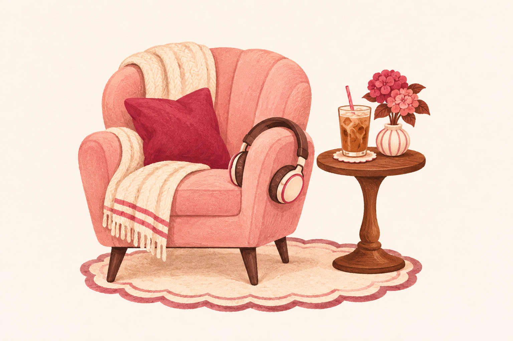

About Carrianne
Hi, I’m Carrianne! I work in a public library, and a good day off usually involves an audiobook and an iced coffee. Cuppa Critiques started as my book blog, and I’m bringing it back as a place to talk about the books I’d recommend to a friend.

What’s usually on my shelf?
- Fantasy with a world I want to spend more time in
- Adventures with dark humor and a little chaos
- Poetry I can dip into a few pages at a time
How I rate books on the Cuppa Scale
I use coffee cups for my ratings. For audiobooks, I rate the whole listening experience. When the narration makes a difference, I’ll tell you how.
- 5 cups — I wanted to keep listening, and I kept thinking about it after it ended. I’d recommend it in a heartbeat.
- 4 cups — I had a great time and would recommend it. A few things kept it from being a favorite.
- 3 cups — I’m glad I gave it a try. I’d recommend it to someone in the right mood for it.
- 2 cups — A few things worked for me, but I had a hard time staying invested.
- 1 cup — I finished it and would have rather spent that time on a different book.
- DNF (did not finish) — I stopped listening. I’ll say why and leave it unrated.
Find your next book
Take a peek at My Reading Shelf for a few ideas, or search WorldCat to see which libraries have the title you’re looking for.